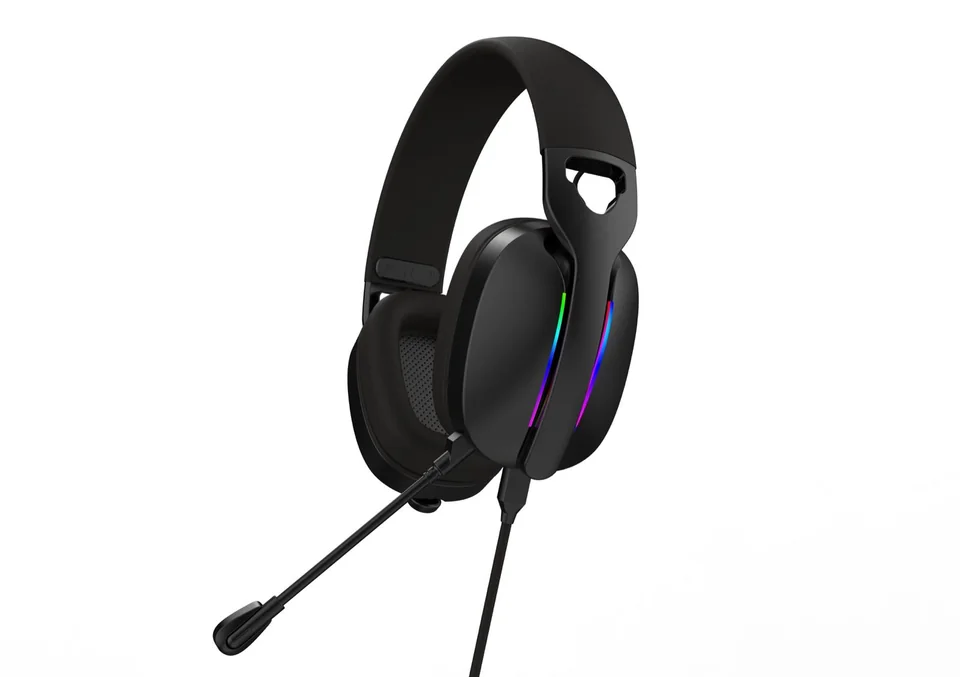
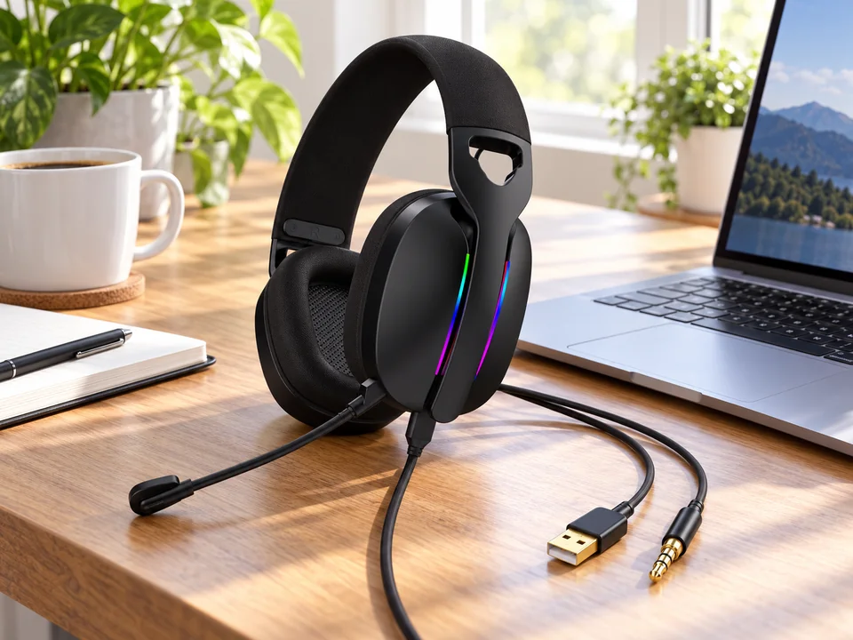

Gaming headset connection guide
Gaming headset USB: does it carry audio or only power the lights?
You plug in USB. The lights come on, but there is no sound. Before assuming the headset is faulty, check whether USB carries audio at all. On a 3.5mm headset with USB-powered lighting, sound and microphone signals use the round 3.5mm plug; USB only powers the lights. A USB-audio version works differently.
Buying for your brand? Ask for the connection written out, not just a photo of the plugs. Two similar-looking headsets may need different cables or device settings.
Lights on but no sound? Start with these checks · Compare the two connections
This guide describes connection configurations, not a claim that every TALRIVO model has the same wiring. No device-specific test results are presented here.

1. 3.5mm wired version: USB powers the lighting only

In the 3.5mm wired configuration described here, playback audio and microphone signals both travel through the 3.5mm plug. USB supplies power to the lighting and does not carry audio.
With the 3.5mm plug connected to a compatible headset jack, sound and microphone operation do not require the USB lighting connection. Leaving USB unplugged simply leaves the lights off.
Calling this only a “USB gaming headset” could lead buyers to expect USB audio. A clearer specification is:
Connection: 3.5mm CTIA audio and microphone plug, plus USB for lighting power only.
2. USB-audio version: USB carries sound and microphone signals
A USB-audio headset uses built-in audio circuitry to communicate with the computer. The computer sends playback audio to the headset and receives microphone audio over USB. On the configuration described here, USB also powers the lighting.
On a supported computer, select the headset in the system's audio settings. Check playback and microphone input separately rather than assuming both work because the lights turn on.
Connection: USB digital audio and microphone, with USB-powered lighting.
Does USB audio automatically mean 7.1 surround sound?
No. USB audio, virtual 7.1 surround sound, EQ and lighting controls are separate features. Some depend on the hardware version, operating system or PC software.
For a version sold as a 7.1 USB headset, confirm whether the surround effect is virtual, how it is enabled, which software and operating systems are required, and which functions remain available without software. Do not transfer one version's feature list to a similar-looking version.
3. Quick connection comparison
| Item | 3.5mm audio + USB lighting | USB-audio configuration |
|---|---|---|
| Playback audio | Through 3.5mm | Through USB |
| Microphone signal | Through 3.5mm | Through USB |
| Lighting power | Through USB | Through USB on the described version |
| Audio with USB unplugged | Available through a compatible 3.5mm connection | No audio in USB mode when USB is disconnected |
| Separate PC microphone jack | A suitable splitter may be needed | Not used for USB audio |
| 7.1 surround or EQ | Do not assume included | Confirm version and software requirements |
| Device compatibility | Confirm jack and wiring | Confirm USB-audio support and headset version |
4. The 3.5mm plug: one connector for audio and microphone
The 3.5mm wired configuration described here uses a 4-pole CTIA headset plug. Playback audio and microphone signals share one connector.
A compatible combined headset jack accepts this connection directly. Computers with separate headphone and microphone sockets need a suitable CTIA headset Y-splitter to separate those signals. A headphone-sharing splitter is not the same accessory: confirm microphone support, not just two headphone outputs.
Is the splitter included?
For the configuration described here, the splitter is not included in the standard package or headset unit price. Buyers can supply their own suitable splitter; we can also discuss sourcing it separately at an additional cost.
Record the agreed accessory list in the sample and order specification so product images, packing lists and delivered packages are consistent.
If the microphone is not detected, check that all plugs are fully inserted, confirm the selected microphone input, and follow the adapter manufacturer's connection instructions.
Choosing a connection for your product range? Ask about USB, 3.5mm or splitter requirements. Include the intended device and headset version so we can check the right configuration.
5. Why can a headset light up without producing sound?
Lighting is not proof that the audio connection works. On a USB-lighting-only configuration, USB can illuminate the headset while audio and microphone remain disconnected.
- Check whether USB is specified for audio or lighting power only.
- If audio uses 3.5mm, connect that plug to the appropriate jack.
- Check for a combined headset jack or separate headphone and microphone sockets.
- Select the correct playback and microphone devices in system settings.
- Check headset volume and microphone mute controls.
For a USB-audio version, check that the device is recognized and selected for both playback and recording.
6. USB receivers and charging ports are different connections
2.4GHz USB receiver
A matching receiver connects a supported host device to the wireless headset. It is not simply a lighting-power cable or charging adapter. Confirm playback, microphone, controls and compatibility using the selected receiver and headset version. See our 2.4GHz vs Bluetooth comparison.
Headset charging port
A USB charging port does not automatically support wired USB audio. Some versions charge only; others support USB audio with a suitable data cable and operating mode. State the confirmed function instead of describing every USB-C port as an audio input.
7. Confirm compatibility by device and connection mode
A connector that fits does not guarantee every headset function. Before claiming compatibility with a PC, console or phone, record the exact device, relevant operating system, headset version, receiver, cable, adapter and connection mode.
Test playback, microphone, volume and mute separately, including software-dependent functions. Phones without a 3.5mm jack may need an adapter that supports headset microphones as well as playback. Avoid blanket claims such as “works with all devices.”
8. A simple sample test before bulk ordering
This is a test plan for the described 3.5mm-plus-USB-lighting configuration, not a published device test result.
| Connection state | What to check |
|---|---|
| 3.5mm connected; USB disconnected | Playback and microphone work; lights remain off |
| USB connected; 3.5mm disconnected | Lighting works; USB carries no playback or microphone signal |
| Both connected | Playback, microphone and lighting together |
For a USB-audio version, test playback and microphone through USB, then check software-dependent features separately. Record the headset version, device, adapter and results.
Photos or a short demonstration video make the approved configuration easier to communicate between the buyer, sales team and factory.
Download the wired headset sample checklist (TXT). Record your sample version, device, playback and microphone results, and included or separately purchased accessories. This is a blank worksheet, not a completed test report.
9. What private-label buyers should confirm
- Does USB carry audio, power lighting, charge the headset or serve more than one function?
- Which connection carries the microphone signal?
- Is the 3.5mm plug a combined CTIA headset plug?
- Which adapters are required for the target devices?
- Which accessories are included and which cost extra?
- Which functions need software?
- Which device and connection combinations have actually been tested?
Use these answers alongside the packaging and accessories checklist before approving a sample or bulk specification.
Further connection references
Other manufacturers' documentation illustrates why connection modes must be checked separately; it does not establish compatibility for TALRIVO products.
Not sure which connection your customers need?
TALRIVO represents our own audio manufacturing business in China. Tell us the devices your customers use and whether you need USB audio or 3.5mm audio with lighting. We can discuss the headset version and any separately priced adapters before you choose a sample.